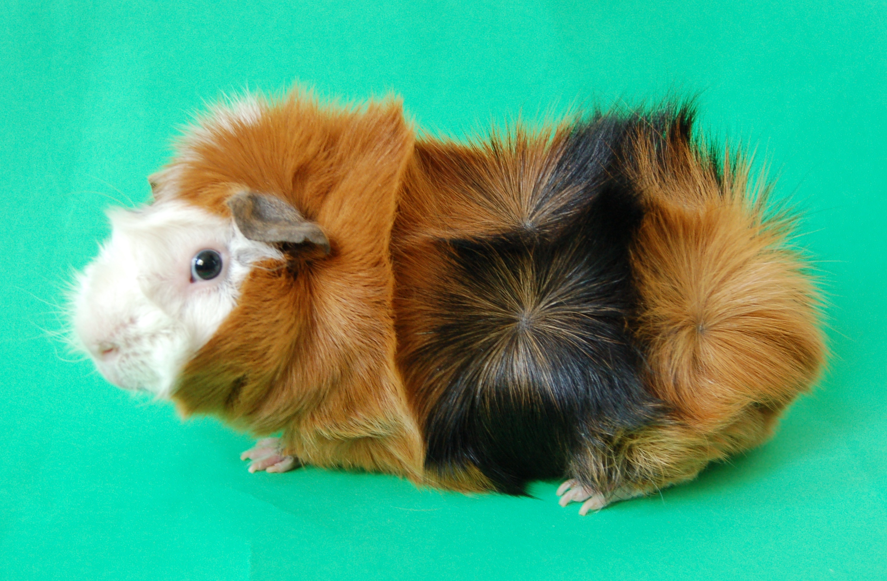
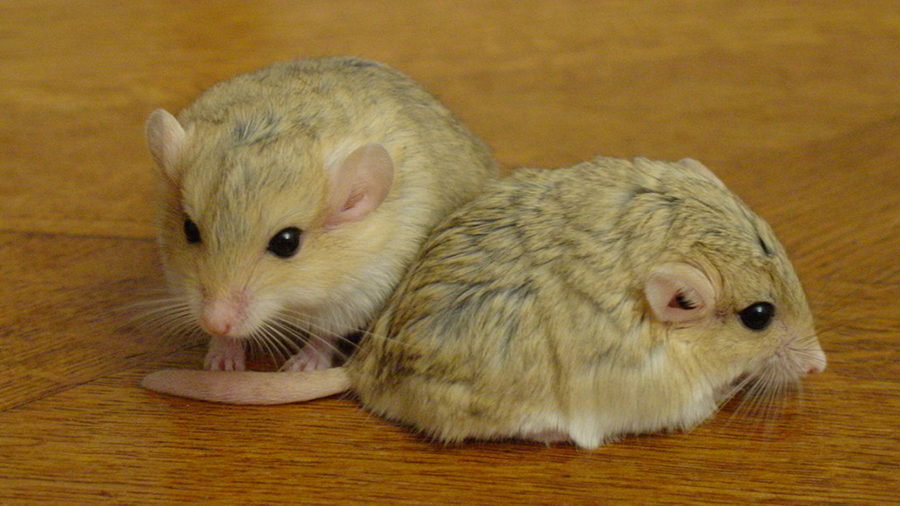

หนูตะเภาหรือหนูแกสบี้ (Guinea pig, Cavy)

ถิ่นกำเนิดมาจากทวีปอเมริกาใต้ แถบประเทศเปรู เป็นสัตว์เลี้ยง
พันธุ์ขนสั้น
Short Hair : คือขนสั้นตรงไม่มีขวัญ
Abyssinian : จะมีลักษณะที่เป็นเอกลักษณ์แตกต่างจากพันธุ์อื่นๆอย่างชัดเจนคือมีขวัญเต็มไปหมดทั้งตัว
Teddy : เป็นหนูตะเภาที่มีขนหนา แต่สั้นประมาณ 3/4 นิ้ว และขนจะหยิกเล็กน้อย

พันธุ์ขนยาว
Coronet : จะมีขวัญ 1 ขวัญบนหน้าผาก
Silkie : ดูคล้ายโคโรเนต แต่จะไม่มีขวัญเลย
แฮมสเตอร์ (Hamster)

แฮมสเตอร์ เป็นสัตว์ที่กระจายพันธุ์ในทะเลทรายของภูมิภาคตะวันออกกลาง, เอเชียกลาง จนถึงเอเชียตะวันออก
ขนาดตัวจะมีขนาดเล็ก อ้วนป้อม และมีหางสั้นกว่าลำตัว และมีขนาดเล็ก อย่างเห็นได้ชัด สีขนมีหลายสี แฮมสเตอร์นั้นมีกระพุ้งแก้มที่ใช้สำหรับเก็บอาหารได้มาก
หนูแฟตเทล (Fat-Tailed Gerbil)

หนูแฟตเทล หรือหนูหางกลม มีต้นกำเนิดดั้งเดิมที่ทางตอนเหนือของประเทศ อียิปต์, แอลจีเรีย, ลิเบีย, ตูนิเซีย และ โมร็อกโก
เอกลักษณ์ของแฟตเทลนั้น ตัวเล็กขนาดฝ่ามือ มีหน้าท้องสีครีม มีขนออกเป็นสีน้ำตาล และเอกลักษณ์เฉพาะ แฟตเทล คือ ส่วนหางของ หนูแฟตเทล จะมีหางที่ใหญ่และอวบเด่นชัด หางของหนูแฟตเทล มีหน้าที่เก็บสะสมไขมันไว้ใช้เมื่อยามขาดแคลนอาหาร
หนูแฟตเทล มักจะชอบขุดหาอาหารตามทราย และขุดเป็นโพรงเพื่อเป็นที่อยู่ หนูแฟตเทล พบเจอกับภัยอันตรายมันจะส่งสัญลักษณ์ด้วยการ กระทืบเท้าเป็นจังหวะ เพื่อป้องกันและเตือนให้เพื่อนฝูงระวัง นอกจากนััน หนูแฟตเทล จะมีลักษณะนิสัยชอบขุด ชอบซ่อนอาหารเพื่อไม่ให้ตัวอื่นแย่งเอาไปกิน